This vignette shows how to replicate and extend the charts in chapter 10 of my book Non-democratic Politics: Authoritarianism, Dictatorships, and Democratization (Palgrave Macmillan, 2016). It assumes that you have downloaded the replication package as follows:
if(!require(devtools)) {
install.packages("devtools")
}
devtools::install_github('xmarquez/AuthoritarianismBook')It also assumes you have the dplyr, ggplot2, scales, forcats, ggalt, broom, reshape2, and knitr packages installed:
if(!require(dplyr)) {
install.packages("dplyr")
}
if(!require(ggplot2)) {
install.packages("ggplot2")
}
if(!require(scales)) {
install.packages("forcats")
}
if(!require(forcats)) {
install.packages("scales")
}
if(!require(ggalt)) {
install.packages("ggalt")
}
if(!require(broom)) {
install.packages("broom")
}
if(!require(reshape2)) {
install.packages("reshape2")
}
if(!require(knitr)) {
install.packages("knitr")
}This table shows the frequency of different types of regime transition, 1945-2010. This table counts only countries that have experienced transitions. Regime change is rare; in the period 1945-2010, only about 5% of all country-years experienced regime transitions. Regime data comes from Geddes, Wright, and Frantz (2014). `Other’ category includes instances of state breakdown, foreign occupation, and state termination (e.g., after unification with a larger state).
library(AuthoritarianismBook)
library(dplyr)
library(ggplot2)
library(reshape2)
data <- all_gwf_periods %>%
mutate(gwf_previous = ifelse(grepl("democracy",
gwf_full_regimetype),
"Democracy",
ifelse(grepl("military|oligarchy|personal|party|monarchy",
gwf_full_regimetype),
"Non-democracy",
"Other"))) %>%
group_by(country_name) %>%
mutate(gwf_next = lead(gwf_previous)) %>%
ungroup() %>%
count(gwf_previous, gwf_next, sort=TRUE) %>%
filter(!is.na(gwf_next)) %>%
ungroup() %>%
mutate(total_trans = sum(n),
prop_trans = scales::percent_format()(n/total_trans))
data %>%
dcast(gwf_previous ~ gwf_next, value.var="prop_trans") %>%
knitr::kable()| gwf_previous | Democracy | Non-democracy | Other |
|---|---|---|---|
| Democracy | NA | 22.1% | 0.3% |
| Non-democracy | 23.9% | 31.7% | 10.3% |
| Other | 7.3% | 3.9% | 0.6% |
This figure is a scatterplot of GDP per capita vs. democracy. GDP data is the median of the per capita value from the Maddison project (The Maddison Project 2013), the Penn World Tables (Feenstra and Timmer 2013), and the World Bank; democracy data from Pemstein, Meserve, and Melton (2010), extended by me (Márquez 2016). Each point represents a country-year; each line represents a country trajectory over those years where income and democracy data exists. Highlighted points are regimes classified as monarchies by Magaloni, Chu, and Min (2013) for the 1950-2013 period, as well as other regimes in the Middle East (including regimes for the period before 1950).
data <- inner_join(extended_uds,
economic_data %>% select(-in_system)) %>%
group_by(country_name, GWn, year, index) %>%
summarise(median = median(per_capita, na.rm = TRUE)) %>%
filter(!is.na(median))## Joining, by = c("country_name", "GWn", "year")data <- data %>%
left_join(magaloni) %>%
mutate(regime_nr = ifelse(regime_nr == "Monarchy",
"monarchy",
NA),
region = ifelse(country_name %in%
c("Algeria",
"Bahrain",
"Egypt",
"Iraq",
"Israel",
"Jordan",
"Kuwait",
"Lebanon",
"Libya",
"Morocco",
"Oman",
"Qatar",
"Saudi Arabia",
"South Sudan",
"Sudan",
"Syria",
"Tunisia",
"Turkey (Ottoman Empire)",
"United Arab Emirates",
"Yemen (Arab Republic of Yemen)",
"Yemen, People's Republic of"),
"Middle East",
ifelse(country_name == "Singapore",
"Singapore",
NA)),
region_regime = ifelse(!is.na(regime_nr) & !is.na(region),
paste(region, regime_nr),
region))## Joining, by = c("country_name", "GWn", "year")ggplot(data = data,
aes(x = index,
y = median,
group = GWn)) +
geom_path(alpha = 0.1) +
geom_point(aes(color = region_regime),
alpha = 0.5) +
theme_bw()+
scale_y_log10(label=scales::dollar) +
geom_smooth(aes(y = median,group=0),
method = "lm",
color = "red") +
labs(y="GDP per capita, median of various measures",
x="Unified democracy score",
shape="",
alpha="",
color="") +
geom_text(data = data %>%
ungroup() %>%
filter(!is.na(region_regime),
(year %in% c(min(year),
max(year))) |
((year %% 10) == 0)),
aes(label = year, color = region_regime),
check_overlap = TRUE) +
geom_vline(xintercept = 0.5, linetype=2) +
theme(legend.position = "bottom") +
scale_color_discrete(na.value = "lightgrey") +
guides(shape = guide_legend(ncol=2))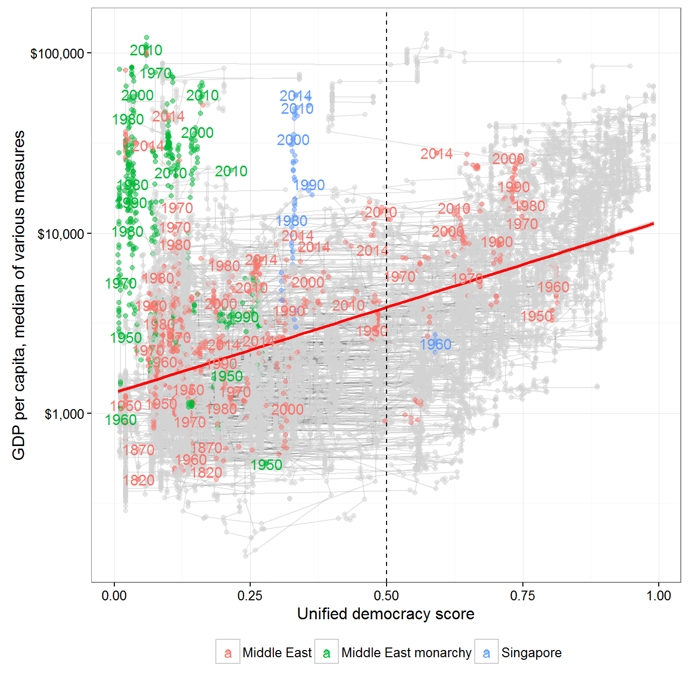
This correlation does not vary much depending on the measure of GDP per capita:
data <- inner_join(extended_uds,
economic_data %>% select(-in_system)) %>%
filter(!is.na(per_capita))## Joining, by = c("country_name", "GWn", "year")ggplot(data = data,
aes(x = index,
y = per_capita,
group = GWn)) +
geom_path(alpha = 0.1) +
geom_point(alpha = 0.5) +
theme_bw() +
scale_y_log10(label=scales::dollar) +
geom_smooth(aes(y = per_capita, group = variable),
method = "lm",
color = "red") +
labs(y="GDP per capita, various measures",
x="Unified democracy score",
shape="",
alpha="",
color="") +
geom_text(data = data %>%
ungroup() %>%
filter((year %in% c(min(year),
max(year))) |
((year %% 25) == 0)),
aes(label = year),
check_overlap = TRUE) +
geom_vline(xintercept = 0.5, linetype=2) +
theme(legend.position = "bottom") +
scale_color_discrete(na.value = "lightgrey") +
guides(shape = guide_legend(ncol=2)) +
facet_wrap(~variable, ncol = 1)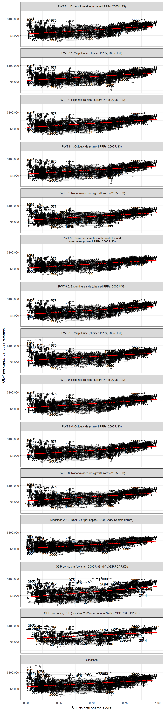
Or democracy:
data <- full_join(vdem,
economic_data %>% select(-in_system)) %>%
group_by(country_name, GWn, year,
v2x_polyarchy,
v2x_api,
v2x_mpi,
v2x_libdem,
v2x_partipdem,
v2x_delibdem,
v2x_egaldem) %>%
summarise(median = median(per_capita, na.rm = TRUE)) %>%
filter(!is.na(median)) %>%
melt(measure.vars = c("v2x_polyarchy",
"v2x_api",
"v2x_mpi",
"v2x_libdem",
"v2x_partipdem",
"v2x_delibdem",
"v2x_egaldem"))## Joining, by = c("country_name", "GWn", "year")ggplot(data = data,
aes(x = value,
y = median,
group = GWn)) +
geom_path(alpha = 0.1) +
geom_point(alpha = 0.5) +
theme_bw()+
scale_y_log10(label=scales::dollar) +
geom_smooth(aes(y = median, group = variable),
method = "lm",
color = "red") +
labs(y="GDP per capita, median of various measures",
x="Democracy score, VDem",
shape="",
alpha="",
color="") +
geom_text(data = data %>%
ungroup() %>%
filter((year %in% c(min(year),
max(year))) |
((year %% 25) == 0)),
aes(label = year),
check_overlap = TRUE) +
geom_vline(xintercept = 0.5, linetype=2) +
theme(legend.position = "bottom") +
scale_color_discrete(na.value = "lightgrey") +
guides(shape = guide_legend(ncol=2)) +
facet_wrap(~variable, ncol = 1)## Warning: Removed 31263 rows containing non-finite values (stat_smooth).## Warning: Removed 2591 rows containing missing values (geom_path).## Warning: Removed 31263 rows containing missing values (geom_point).## Warning: Removed 2627 rows containing missing values (geom_text).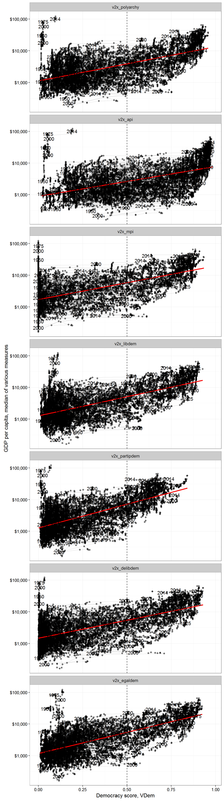
But the correlation does vary from country to country, and depends a bit on the measure of GDP used:
library(broom)
data <- left_join(extended_uds,
economic_data %>% select(-in_system)) %>%
group_by(primary_source,variable,country_name) %>%
filter(!is.na(per_capita),n() > 5) %>%
do(tidy(cor.test(.$index,log(.$per_capita)))) %>%
ungroup()## Joining, by = c("country_name", "GWn", "year")ggplot(data = data,
aes(x = forcats::fct_reorder(country_name, estimate, na.rm =TRUE),
y = estimate)) +
geom_pointrange(aes(ymin = conf.low,
ymax = conf.high,
color = primary_source)) +
labs(x = "",
y = "Estimated correlation",
color = "Primary source of GDP data") +
theme_bw() +
theme(legend.position = "bottom") +
guides(color = guide_legend(ncol=2)) +
geom_hline(yintercept = 0, color = "red") +
coord_flip()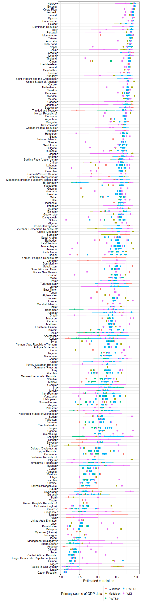
We can also do this as follows:
data <- left_join(extended_uds,
economic_data %>% select(-in_system)) %>%
group_by(primary_source,variable,country_name) %>%
filter(!is.na(per_capita),n() > 5) %>%
do(tidy(cor.test(.$index,log(.$per_capita)))) %>%
group_by(country_name) %>%
summarise(avg_estimate = mean(estimate),
se_estimate = sqrt(sum(((estimate - conf.high)/1.96)^2))/n(),
conf.high = avg_estimate + 1.96*se_estimate,
conf.low = avg_estimate - 1.96*se_estimate)## Joining, by = c("country_name", "GWn", "year")ggplot(data = data,
aes(x = forcats::fct_reorder(country_name, avg_estimate, na.rm =TRUE),
y = avg_estimate)) +
geom_pointrange(aes(ymin = conf.low,
ymax = conf.high)) +
labs(x = "",
y = "Estimated correlation",
color = "Primary source of GDP data") +
theme_bw() +
theme(legend.position = "bottom") +
guides(color = guide_legend(ncol=2)) +
geom_hline(yintercept = 0, color = "red") +
coord_flip()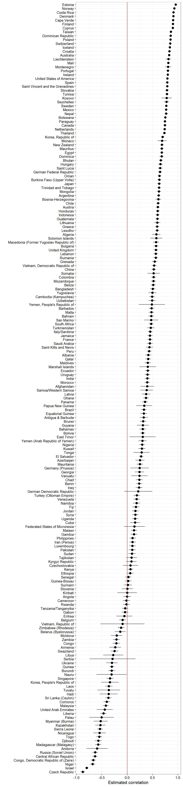
Raw (uncontrolled) correlation between economic development and democracy, per year. Shaded areas represent 95% confidence intervals. GDP data from the MAddison Project (The Maddison Project 2013), Penn World Tables (Feenstra and Timmer 2013), and World Bank; democracy data from Pemstein, Meserve, and Melton (2010), extended by the me (Márquez 2016).
data <- left_join(extended_uds,
economic_data %>% select(-in_system)) %>%
group_by(primary_source,variable,year) %>%
filter(!is.na(per_capita),n() > 3) %>%
do(tidy(cor.test(.$index,log(.$per_capita)))) %>%
group_by(year) %>%
do(data.frame(value = fivenum(.$estimate),
variable = c("minimum",
"lower_hinge",
"median",
"upper_hinge",
"maximum"),
min_conf_low = min(.$conf.low,na.rm=TRUE),
max_conf_high = max(.$conf.high,na.rm=TRUE))) %>%
dcast(year + min_conf_low + max_conf_high ~ variable )## Joining, by = c("country_name", "GWn", "year")ggplot(data = data,
aes(x=year,
y = median,
ymin = lower_hinge,
ymax = upper_hinge)) +
geom_path() +
geom_ribbon(alpha=0.2, fill = "grey") +
theme_bw()+
geom_ribbon(aes(ymax = max_conf_high,
ymin = min_conf_low),
alpha = 0.3, fill = "lightgrey") +
geom_smooth(aes(y=median), color = "black") +
labs(y="Raw correlation between
GDP per capita (various measures) and
extended Unified Democracy Score, per year") +
geom_hline(yintercept = 0, linetype=2) +
coord_cartesian(xlim=c(1850,2014))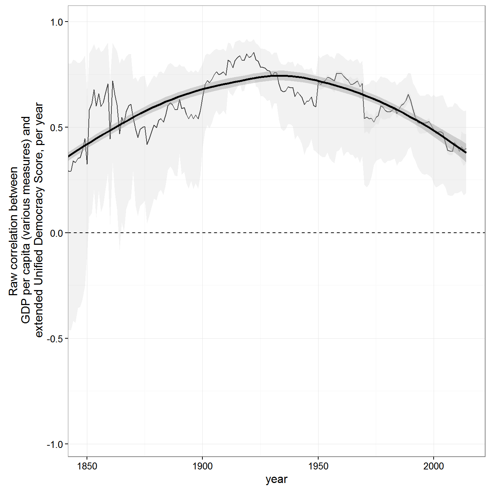
Inequality data is from the Standardized Worldwide Income Inequality Database (Solt 2016, Solt (2009)).
count_sequence_breaks <- function(seq, seq_step = 1) {
first_diff <- c(seq_step, diff(seq)) - seq_step
periods <- cumsum(abs(first_diff))
periods
}
data <- swiid_summary_5 %>%
filter(country_name %in% c("Egypt","Tunisia"))
world_ineq <- swiid_summary_5 %>%
group_by(year,variable) %>%
summarise(mean_value = mean(mean_value,na.rm=TRUE),
se = sqrt(sum(se^2))/n())
middle_east_ineq <- swiid_summary_5 %>%
filter(region %in% c("Northern Africa","Western Asia"),
!(country_name %in% c("Georgia","Azerbaijan","Cyprus"))) %>%
group_by(year,variable) %>%
summarise(mean_value = mean(mean_value,na.rm=TRUE),
se = sqrt(sum(se^2))/n())
world_ineq$country_name <- "World avg."
middle_east_ineq$country_name <- "Middle East avg."
data <- bind_rows(data, world_ineq, middle_east_ineq) %>%
filter(variable == "gini_net") %>%
group_by(country_name) %>%
arrange(year) %>%
mutate(period = paste(count_sequence_breaks(year), country_name)) %>%
ungroup()
ggplot(data = data %>% filter(country_name != "Tunisia"),
aes(x=year,
y = mean_value,
color = country_name,
fill = country_name,
ymin = mean_value - 1.96*se,
ymax = mean_value + 1.96*se,
group = period)) +
geom_path() +
geom_point() +
geom_ribbon(alpha=0.2) +
labs(fill = "",
color ="",
y = "Net gini index\n(after taxes and transfers,
higher values indicate more inequality)") +
theme_bw() +
theme(legend.position ="bottom") +
geom_vline(xintercept = 2011, color = "red") +
geom_text(x = 2011,
y = 50,
label = "2011 revolution",
angle = 90,
color = "black")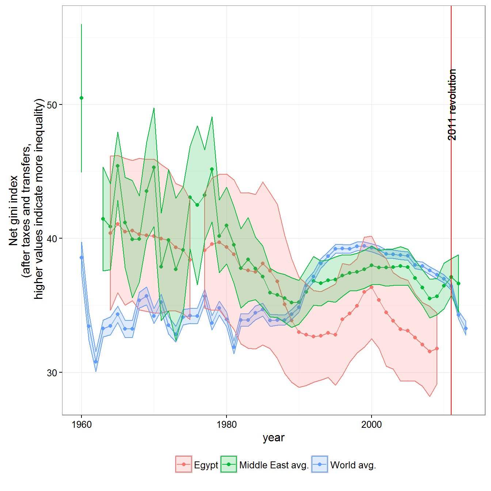
ggplot(data = data %>% filter(country_name != "Egypt"),
aes(x=year,
y = mean_value,
color = forcats::fct_relevel(country_name, "Tunisia"),
fill = forcats::fct_relevel(country_name, "Tunisia"),
ymin = mean_value - 1.96*se,
ymax = mean_value + 1.96*se,
group = period)) +
geom_point() +
geom_path() +
geom_ribbon(alpha=0.2) +
labs(fill = "",
color ="",
y = "Net gini index\n(after taxes and transfers,
higher values indicate more inequality)") +
theme_bw() +
theme(legend.position ="bottom") +
geom_vline(xintercept = 2011, color = "red") +
geom_text(x = 2011,
y = 50,
label = "2011 revolution",
angle = 90,
color = "black")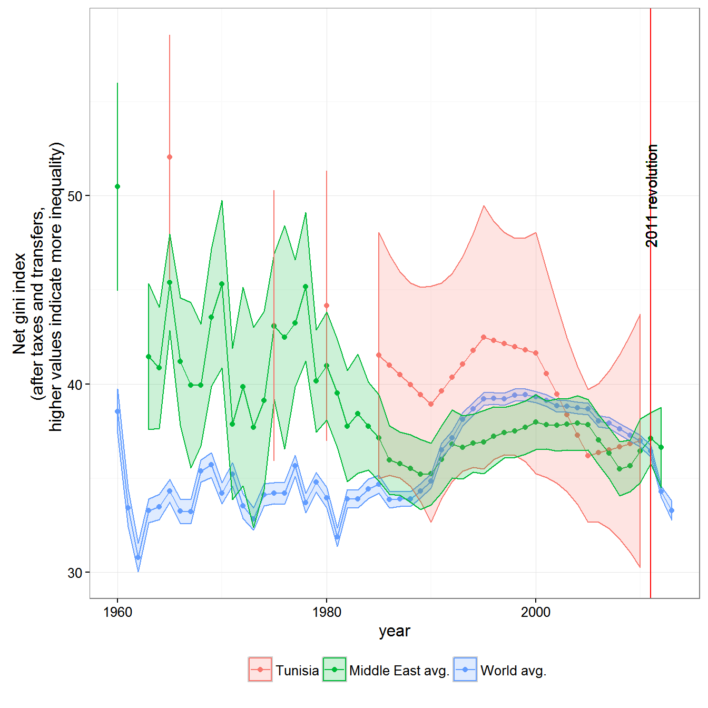
data <- swiid_summary_5 %>%
filter(country_name %in% c("Venezuela"))
latinamerica_ineq <- swiid_summary_5 %>%
filter(region %in% c("Southern America","Central America")) %>%
group_by(year, variable) %>%
summarise(mean_value = mean(mean_value, na.rm=TRUE),
se = sqrt(sum(se^2))/n())
latinamerica_ineq$country_name <- "Latin America avg."
data <- bind_rows(data, world_ineq, latinamerica_ineq) %>%
filter(variable == "gini_net") %>%
group_by(country_name) %>%
arrange(year) %>%
mutate(period = paste(count_sequence_breaks(year), country_name)) %>%
ungroup()
ggplot(data = data %>% filter(country_name != "Egypt"),
aes(x=year,
y = mean_value,
color = forcats::fct_relevel(country_name, "Venezuela"),
fill = forcats::fct_relevel(country_name, "Venezuela"),
ymin = mean_value - 1.96*se,
ymax = mean_value + 1.96*se,
group = period)) +
geom_path() +
geom_point() +
geom_ribbon(alpha=0.2) +
labs(fill = "",
color ="",
y = "Net gini index\n(after taxes and transfers,
higher values indicate more inequality)") +
theme_bw() +
theme(legend.position ="bottom") +
geom_vline(xintercept = 1997, color = "red") +
geom_text(x = 1997,
y = 50,
label = "Chavez is elected",
angle = 90,
color = "black")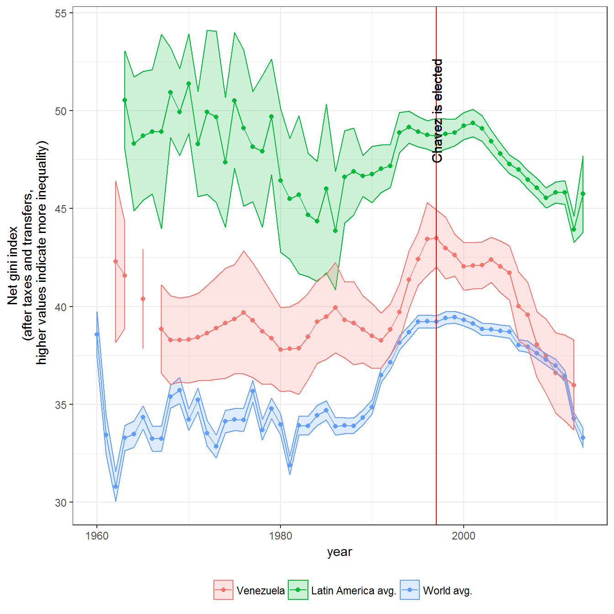
The inequality measure is the net gini index of income inequality (net means after taxes and transfers); it goes from 0 to 100, where higher numbers mean more inequality. Data on regimes is from Kailitz (2013). Inequality data from Solt (Solt 2009; Solt 2016). The democracy data is from Pemstein, Meserve, and Melton (2010), extended by me (Márquez 2016).
data <- inner_join(swiid_summary_5,
extended_uds %>%
select(country_name,GWn,year,index) %>%
rename(uds = index)) %>%
inner_join(kailitz_yearly %>%
select(-cown:-in_system) %>%
mutate(democracy = grepl("Democracy",combined_regime)) %>%
melt(measure.vars = c("personal",
"communist",
"military",
"party",
"monarchy",
"electoral",
"failure",
"transition",
"democracy")) %>%
filter(value) %>%
rename(regime = variable)) %>%
filter(!is.na(regime),
variable %in% c("gini_net"))## Joining, by = c("country_name", "GWn", "year")## Joining, by = c("country_name", "GWn", "year", "GWc")library(ggalt)
ggplot(data = data,
aes(x = uds,
y = mean_value,
group = regime)) +
stat_bkde2d(bandwidth = c(0.1,1),
aes(alpha = ..level..),
geom ="polygon") +
theme_bw() +
labs(y = "Gini index",
x = "Unified democracy score (democracies = >0.5)",
alpha = "Concentration of regimes",
fill = "") +
theme(legend.position = "bottom") +
geom_vline(xintercept = 0.5, color = "red") +
facet_wrap(~regime) +
coord_cartesian(xlim=c(0,1))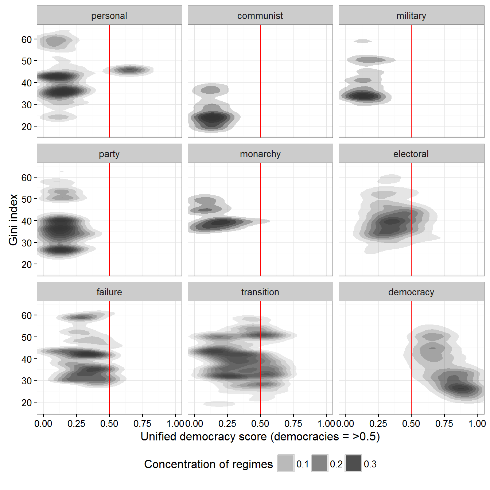
We can use the measure of regime type from Magaloni, Chu, and Min (2013) instead:
data <- inner_join(swiid_summary_5,
extended_uds %>%
select(country_name,
GWn,
year,
index) %>%
rename(uds = index)) %>%
inner_join(magaloni %>%
select(country_name,
GWn,
year,
regime_nr)) %>%
left_join(kailitz_yearly %>%
select(country_name,
GWn,
year,
communist)) %>%
mutate(regime = ifelse(communist,
paste("Communist ", regime_nr),
regime_nr)) %>%
filter(!is.na(regime),
variable %in% c("gini_net"))## Joining, by = c("country_name", "GWn", "year")
## Joining, by = c("country_name", "GWn", "year")
## Joining, by = c("country_name", "GWn", "year")ggplot(data = data,
aes(x = uds,
y = mean_value,
group = regime)) +
stat_bkde2d(bandwidth = c(0.1,1),
aes(alpha =..level..),
geom ="polygon") +
theme_bw() +
labs(y = "Gini index",
x = "Unified democracy score (democracies = >0.5)",
alpha="Concentration of regimes",
fill="") +
theme(legend.position = "bottom") +
geom_vline(xintercept = 0.5, color = "red") +
facet_wrap(~regime) +
coord_cartesian(xlim = c(0,1))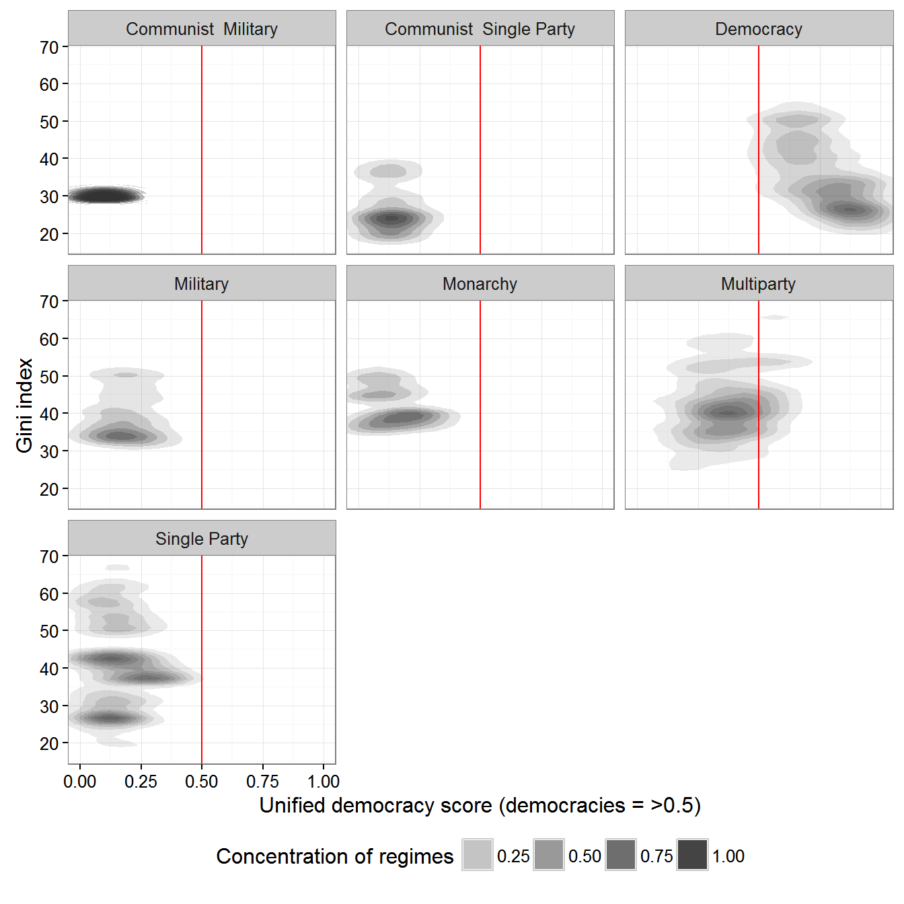
Or from Wahman, Teorell, and Hadenius (2013):
data <- inner_join(swiid_summary_5,
extended_uds %>%
select(country_name,
GWn,
year,
index) %>%
rename(uds = index)) %>%
inner_join(wahman_teorell %>%
select(country_name,
GWn,
year,
regime1ny)) %>%
filter(!is.na(regime1ny)) %>%
left_join(kailitz_yearly %>%
select(country_name,
GWn,
year,
communist)) %>%
mutate(regime = ifelse(communist,
paste("Communist ", regime1ny),
as.character(regime1ny))) %>%
filter(!is.na(regime),
variable %in% c("gini_net"))## Joining, by = c("country_name", "GWn", "year")
## Joining, by = c("country_name", "GWn", "year")
## Joining, by = c("country_name", "GWn", "year")ggplot(data = data,
aes(x = uds,
y = mean_value,
group = regime)) +
stat_bkde2d(bandwidth = c(0.1,1),
aes(alpha =..level..),
geom ="polygon") +
theme_bw() +
labs(y = "Gini index",
x = "Unified democracy score (democracies = >0.5)",
alpha="Concentration of regimes",
fill="") +
theme(legend.position = "bottom") +
geom_vline(xintercept = 0.5, color = "red") +
facet_wrap(~regime) +
coord_cartesian(xlim = c(0,1))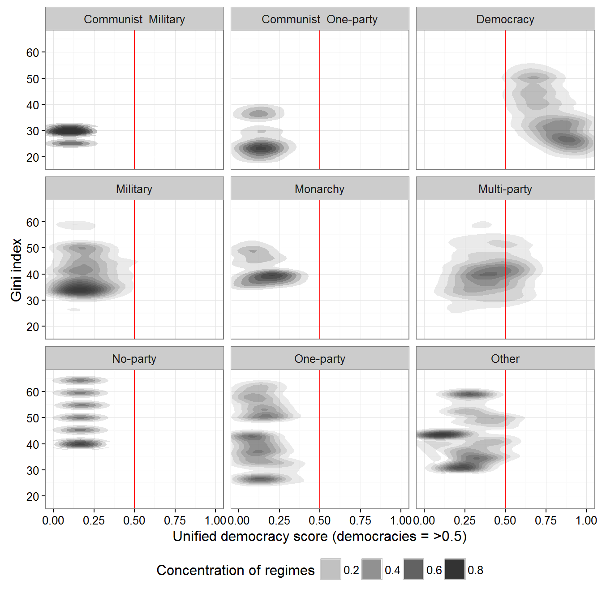
Or from Geddes, Wright, and Frantz (2014):
data <- inner_join(swiid_summary_5,
extended_uds %>%
select(country_name,
GWn,
year,
index) %>%
rename(uds = index)) %>%
inner_join(all_gwf %>%
select(country_name,
GWn,
year,
gwf_full_regimetype)) %>%
filter(!is.na(gwf_full_regimetype)) %>%
left_join(kailitz_yearly %>%
select(country_name,
GWn,
year,
communist)) %>%
mutate(regime = ifelse(communist,
paste("Communist ", gwf_full_regimetype),
as.character(gwf_full_regimetype))) %>%
filter(!is.na(regime),
variable %in% c("gini_net"))## Joining, by = c("country_name", "GWn", "year")
## Joining, by = c("country_name", "GWn", "year")
## Joining, by = c("country_name", "GWn", "year")ggplot(data = data,
aes(x = uds,
y = mean_value,
group = regime)) +
stat_bkde2d(bandwidth = c(0.1,1),
aes(alpha =..level..),
geom ="polygon") +
theme_bw() +
labs(y = "Gini index",
x = "Unified democracy score (democracies = >0.5)",
alpha="Concentration of regimes",
fill="") +
theme(legend.position = "bottom") +
geom_vline(xintercept = 0.5, color = "red") +
facet_wrap(~regime, ncol = 3) +
coord_cartesian(xlim = c(0,1))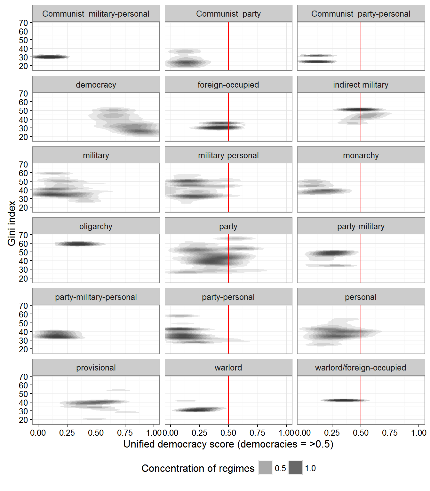
The correlation between inequality and democracy has varied accross countries.
data <- left_join(extended_uds,
swiid_summary_5 %>%
select(country_name,
GWn,
year,
variable,
mean_value)) %>%
group_by(variable, country_name) %>%
filter(!is.na(mean_value),
n() > 5) %>%
do(tidy(cor.test(.$index, .$mean_value))) %>%
filter(variable == "gini_net")## Joining, by = c("country_name", "GWn", "year")ggplot(data = data,
aes(x = forcats::fct_reorder(country_name, estimate, na.rm =TRUE),
y = estimate)) +
geom_pointrange(aes(ymin = conf.low,
ymax = conf.high)) +
labs(x = "",
y = "Estimated correlation",
color = "Measure") +
theme_bw() +
theme(legend.position = "bottom") +
guides(color = guide_legend(ncol=2)) +
geom_hline(yintercept = 0, color = "red") +
coord_flip()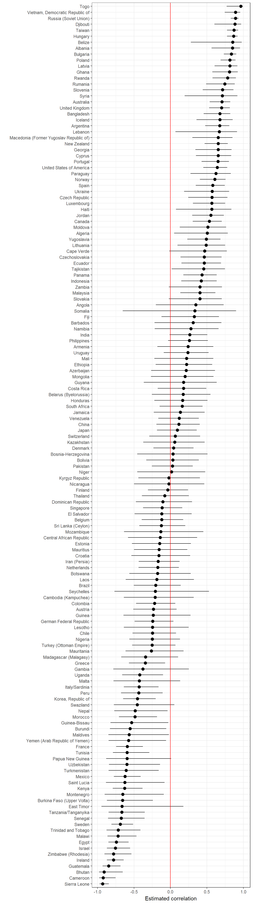
Feenstra, Robert Inklaar, Robert C., and Marcel P. Timmer. 2013. “The Next Generation of the Penn World Table.” Dataset. www.ggdc.net/pwt.
Geddes, Barbara, Joseph Wright, and Erica Frantz. 2014. “Autocratic Breakdown and Regime Transitions: A New Data Set.” Perspectives on Politics 12 (1): 313–31. doi:10.1017/S1537592714000851.
Kailitz, Steffen. 2013. “Classifying Political Regimes Revisited: Legitimation and Durability.” Democratization 20 (1): 39–60. doi:10.1080/13510347.2013.738861.
Magaloni, Beatriz, Jonathan Chu, and Eric Min. 2013. “Autocracies of the World, 1950-2012 (Version 1.0).” Dataset. http://cddrl.fsi.stanford.edu/research/autocracies_of_the_world_dataset.
Márquez, Xavier. 2016. “A Quick Method for Extending the Unified Democracy Scores.” Available at SSRN 2753830. doi:10.2139/ssrn.2753830.
Pemstein, Daniel, Stephen Meserve, and James Melton. 2010. “Democratic Compromise: A Latent Variable Analysis of Ten Measures of Regime Type.” Political Analysis 18 (4): 426–49. doi:10.1093/pan/mpq020.
Solt, Frederick. 2009. “Standardizing the World Income Inequality Database.” Social Science Quarterly 90 (2): 231–42. http://fsolt.org/swiid/.
———. 2016. “The Standardized World Income Inequality Database.” Social Science Quarterly, n/a–n/a. doi:10.1111/ssqu.12295.
The Maddison Project. 2013. “The Maddison Project.” Dataset. http://www.ggdc.net/maddison/maddison-project/home.htm.
Wahman, Michael, Jan Teorell, and Axel Hadenius. 2013. “Authoritarian Regime Types Revisited: Updated Data in Comparative Perspective.” Contemporary Politics 19 (1): 19–34. https://sites.google.com/site/authoritarianregimedataset/data.